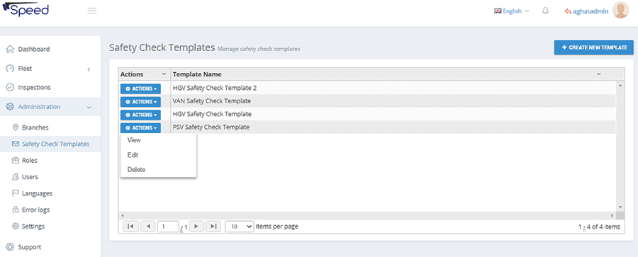

Safety Check Templates
UK’s Driver and Vehicle Standard Agency (DVSA) has proposed different kinds of walk-around checks for HGV, PSV, and Personal Vans. So, you would need a different template when inspecting a PSV as compared to the HGV. In Safety Check Templates you would find.
